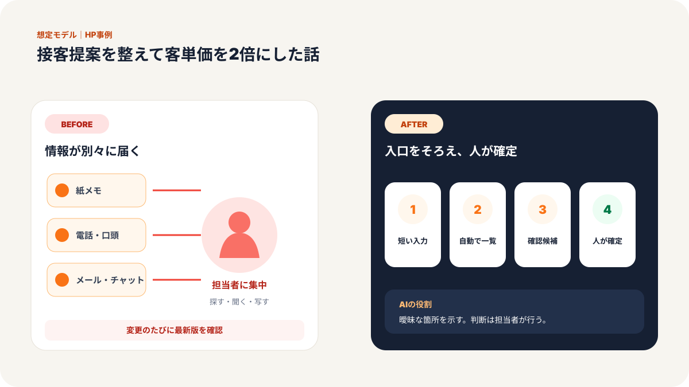
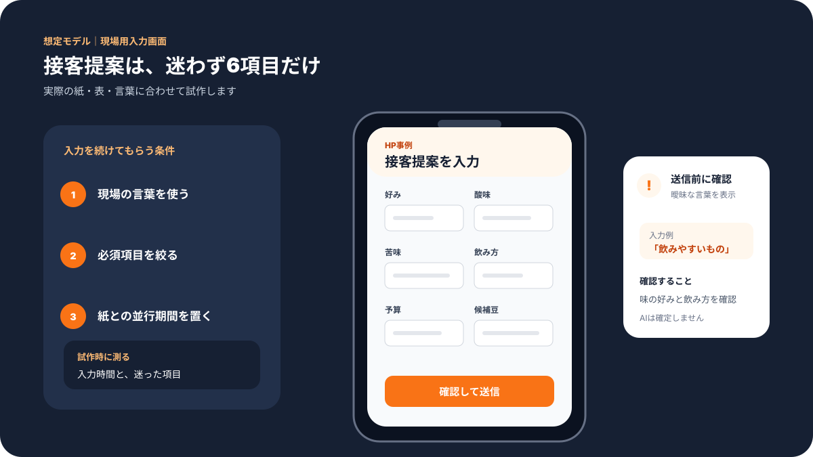
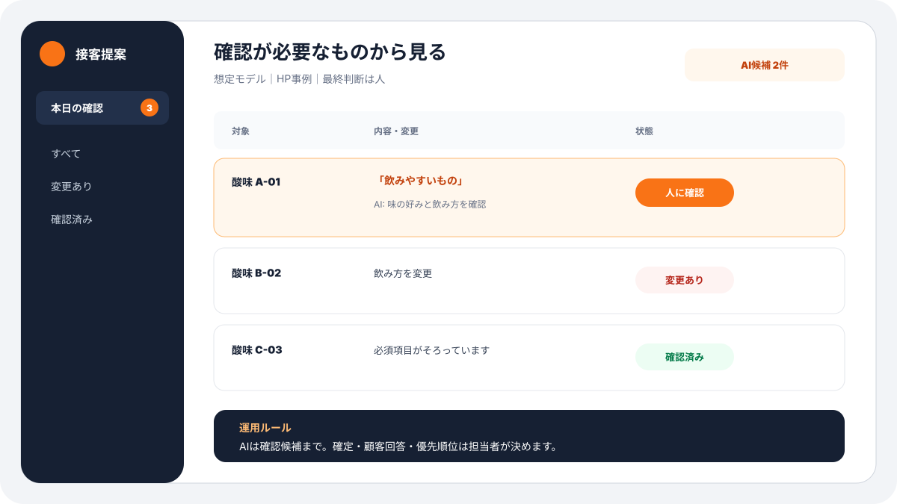
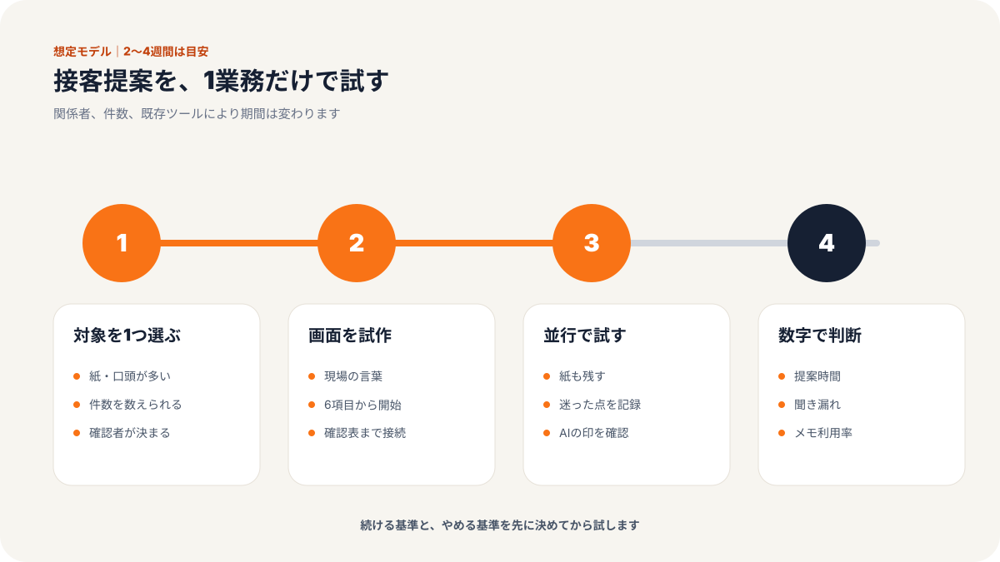
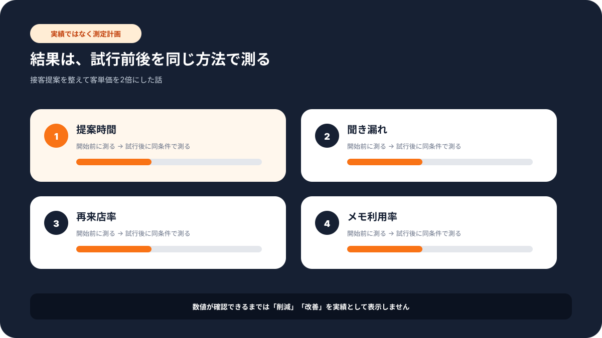

現場での使い方
この記事で変わる業務の流れ
「誰が入力し、誰が確認するか」までイメージできるよう、想定画面と導入手順をまとめています。





# 従業員4名のコーヒー専門店／接客提案を整えて客単価を2倍にした話
> 飲食・サービス業 × 接客スタッフ × 従業員4名の事例
神奈川県茅ヶ崎市にある、従業員4名のスペシャルティコーヒー専門店を想定した事例です。
このお店は豆の品質にも、抽出方法にもこだわっていました。常連のお客様からの評価も悪くありません。ところが店長さんは、ずっと同じ悩みを抱えていました。
「豆は良いんです。でも、スタッフによって説明の深さが違うんです」
コーヒー専門店では、商品そのものだけでなく、説明の仕方が売上に直結します。酸味がある豆をどう説明するか。初めて来たお客様にどの器具を勧めるか。ギフト目的の方にどんな組み合わせを提案するか。
この判断が、経験者の頭の中に入ったままになっていました。
課題：説明力が属人化し、豆や器具の提案が伸びなかった
来店客の多くは、専門用語に詳しい人ばかりではありません。
「苦くないコーヒーがいいです」
「家でもおいしく淹れたいです」
「プレゼントにしたいんですが、何が良いですか」
こうした相談に対して、ベテランスタッフは自然に質問を返せます。飲む時間帯、好み、予算、器具の有無、普段買っている豆。会話の中で情報を集め、最適な豆や抽出方法を提案します。
一方で、経験の浅いスタッフは説明が浅くなりがちでした。
「こちらが人気です」
「酸味が少なめです」
「初めてならこの豆が良いと思います」
間違いではありません。ただ、専門店ならではの価値が伝わり切らない。
店長さんはこう話していました。
「接客の最後に、豆や器具の追加提案まで自然にできる人と、できない人の差が大きかったんです」
数字にも表れていました。
| 項目 | Before | After |
|------|--------|-------|
| 顧客満足度 | 82% | 96% |
| 1回あたりの滞在時間 | 25分 | 50分 |
| 客単価 | 1,200円 | 2,400円 |
| 豆・器具販売 | 基準値 | 前年比180% |
| 年間売上への影響 | - | 約680万円向上 |
施策：接客時の聞き取りと提案パターンを入力画面にまとめた
今回行ったのは、難しいシステム開発ではありません。
まず、接客中に確認すべき項目を整理しました。
ステップ1: ベテランの質問を分解する
最初に、店長さんとベテランスタッフが普段どんな質問をしているかを洗い出しました。
例えば、次のような項目です。
- 普段よく飲む味は、苦味寄りか酸味寄りか
- 家にある器具は、ドリッパーかフレンチプレスか
- 1日に飲む回数はどれくらいか
- 自宅用か、贈り物か
- 予算はどれくらいか
- コーヒーに詳しい人か、初心者か
これを紙のマニュアルにするだけでは、現場で使われにくいです。そこで、タブレットやスマホで簡単に入力できる画面にしました。
ステップ2: 回答に合わせて提案候補を出す
次に、回答内容に応じて、豆、抽出方法、器具、ペアリングの候補が出るようにしました。
ここではAIも使いましたが、AIに自由に接客させたわけではありません。
お店としておすすめしたい豆の特徴、価格帯、説明の言い回しを先に整理し、その範囲の中で提案文を作る形にしました。
店長さんはここで安心していました。
「AIが勝手に変なことを言うんじゃなくて、うちの言い方に合わせてくれるなら使えますね」
ステップ3: 接客後の反応を記録する
最後に、提案後のお客様の反応も残すようにしました。
購入した豆、追加で買った器具、次回来店時に聞くこと、苦手だった説明。こうした情報をためておくことで、次の接客に活かせます。
これは「情報をためておく場所」を作っただけです。大げさな仕組みではありません。
ただ、従業員4名の小さなお店では、この小さな記録が大きく効きました。
成果：専門知識を持つ人だけに頼らない接客になった
導入後、最も変わったのは新人スタッフの接客でした。
以前は、難しい質問を受けると店長を呼んでいました。導入後は、入力画面に沿って聞き取りを進めることで、必要な情報を漏らさず確認できるようになりました。
新人スタッフはこう話していました。
「何を聞けばいいか分かるだけで、かなり落ち着いて接客できるようになりました」
お客様側の変化もありました。
単に豆を買って帰るのではなく、抽出方法や器具の相談まで広がるようになったのです。滞在時間は25分から50分に伸びましたが、待ち時間が長くなったという意味ではありません。会話が深くなり、納得して買う時間が増えたということです。
客単価は1,200円から2,400円へ。豆・器具販売は前年比180%になりました。
なぜ効果が出たか：接客の才能ではなく、聞く順番を整えたから
今回のポイントは、AIに接客を丸投げしたことではありません。
効果が出た理由は、ベテランが無意識にやっていた「聞く順番」を整えたことです。
専門店の接客は、知識量だけで決まりません。相手が何を知りたいかを聞き、相手の言葉に合わせて説明し、無理のない提案をする。この流れが重要です。
その流れを入力画面と提案文に落としたことで、スタッフ全員が同じ土台で接客できるようになりました。
他の業種でも応用できます。
- 美容室なら、髪質や悩みを聞いて施術提案を整える
- 雑貨店なら、ギフト目的や予算から商品提案を整える
- クリニックなら、初回説明や注意事項の伝え漏れを減らす
- 教室業なら、生徒の目的に合わせて体験案内を整える
大切なのは、AIを目立たせることではありません。現場でうまくいっている人の動きを、他のスタッフも使える形にすることです。
導入時に気をつけたこと：接客を機械的にしない
この事例で特に注意したのは、接客をマニュアル通りにしすぎないことです。
コーヒー専門店の魅力は、スタッフとの会話にもあります。すべてを決まった質問にしてしまうと、かえって味気ない接客になります。
そこで、入力画面は「読む台本」ではなく「聞き忘れを防ぐメモ」として使いました。
例えば、常連のお客様には細かい質問を省きます。初来店のお客様には、好みや飲む場面を丁寧に聞きます。ギフト目的の方には、相手の年齢層や渡す場面を確認します。
AIが作る提案文も、そのまま読み上げるのではなく、スタッフが自分の言葉に直す前提にしました。
「このまま読んでください」ではなく、「説明のヒントとして使ってください」という位置づけです。
店長さんは導入後にこう言っていました。
「スタッフの個性は残したまま、聞き忘れだけが減ったのが良かったです」
これは小さなお店ではとても大事です。仕組みを入れても、そのお店らしさが消えてしまっては意味がありません。
小さく始めるなら：人気商品10個からで十分
同じような取り組みを始める場合、最初から全商品を登録する必要はありません。
まずは売れ筋の豆10種類、よく聞かれる器具5種類、代表的な相談パターン10個程度で十分です。
「苦味が苦手」「プレゼント用」「家で簡単に淹れたい」「カフェオレに合う豆がほしい」など、よくある相談から始めます。
最初の範囲を小さくすると、スタッフも使いやすくなります。反応を見ながら、少しずつ商品や提案文を増やしていけばよいのです。
大切なのは、完璧な接客システムを作ることではありません。
今日から新人スタッフが一つ多く質問できること。店長しかできなかった提案を、他のスタッフも少しできるようになること。
その積み重ねが、顧客満足度や客単価に効いてきます。
気になる業務があれば、お気軽にお声がけください。
弊社では中小企業のAI活用・システム開発の伴走支援を行っています。